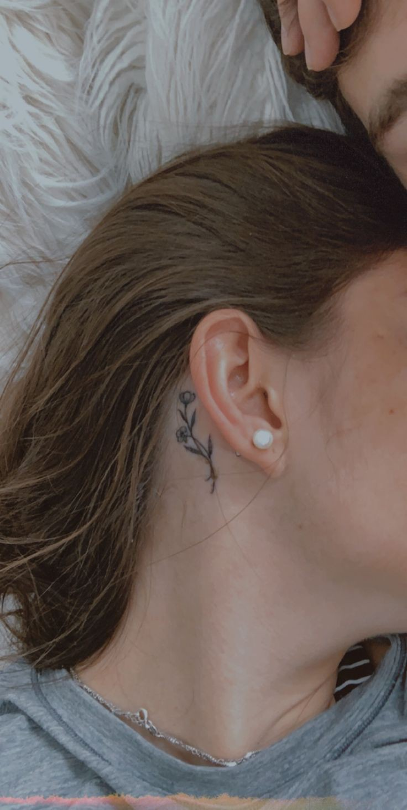
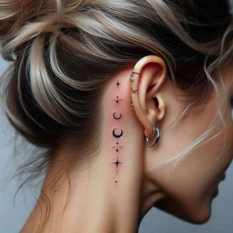
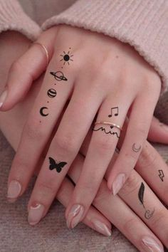
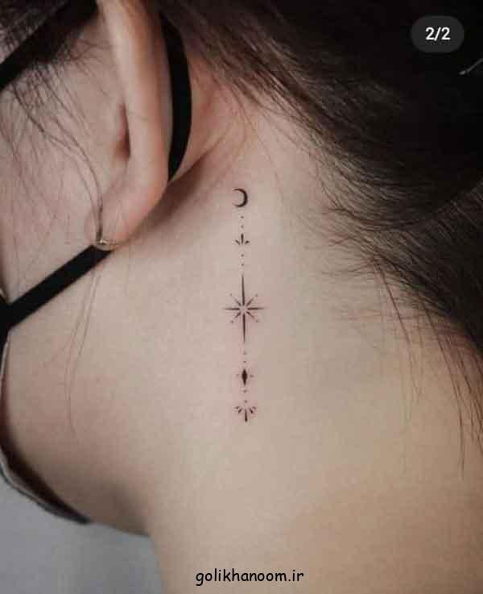
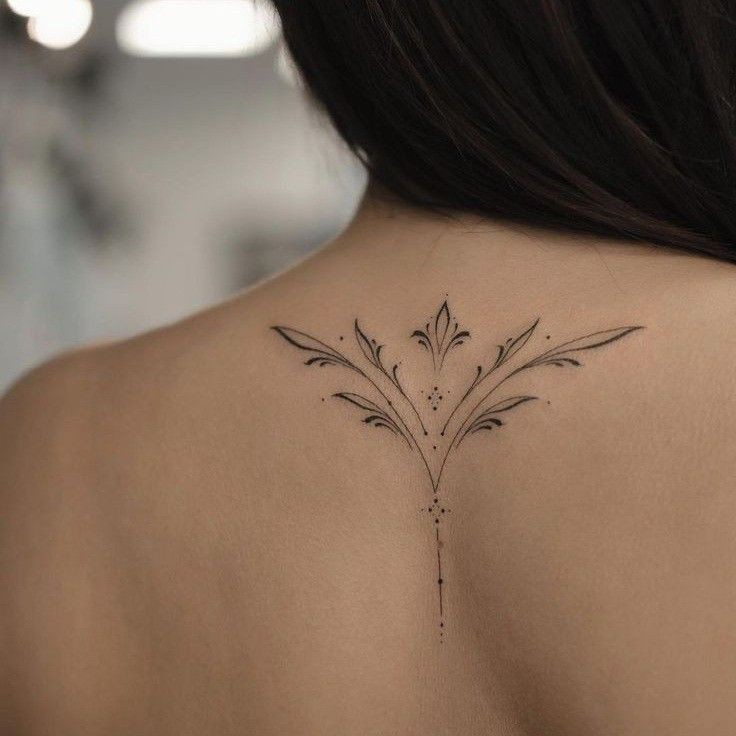

Stick and poke tattoos
About Stick and poke tattoos
- Stick and poke tattoos, also known as hand-poked tattoos, are a traditional form of tattooing that doesn't use a machine
- Instead, the artist uses a simple needle attached to a stick to manually poke the ink into the skin.
Characteristics
- DIY Vibe: These tattoos have a punk, DIY aesthetic due to their manual application method
- Minimal Equipment: The process requires minimal equipment—just a needle, ink, and a stick.
- Time-Consuming: Because the artist manually creates each dot, stick and poke tattoos can take longer to complete compared to machine tattoos.
- Unique Look: The hand-poked technique often results in a distinct, textured appearance with visible dot patterns.




